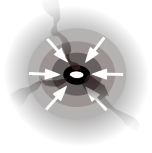
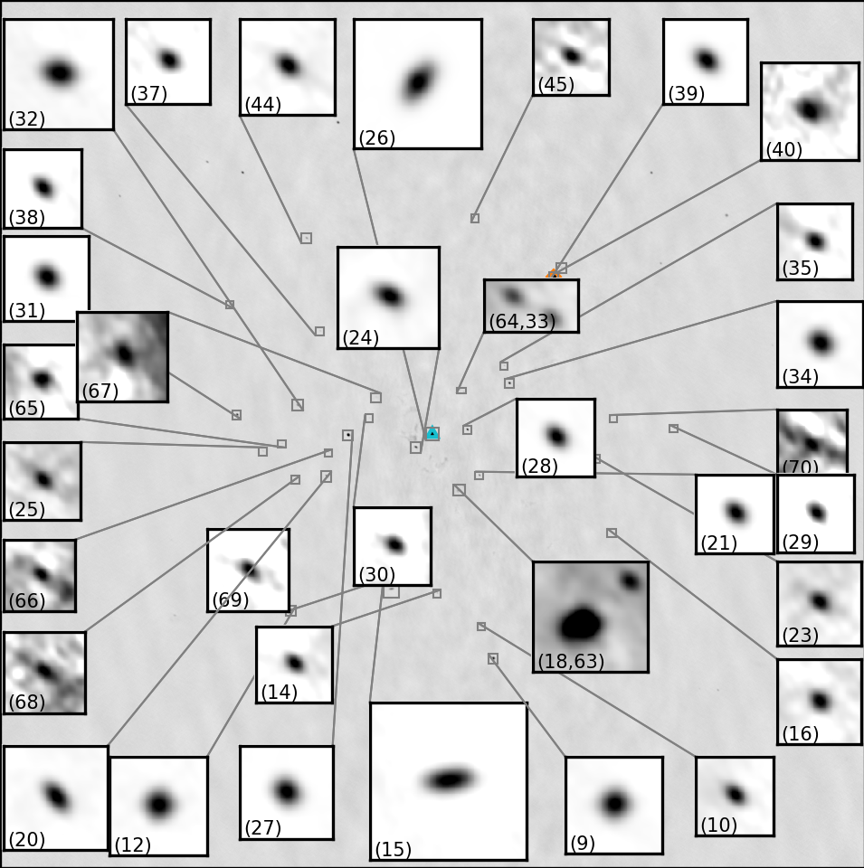
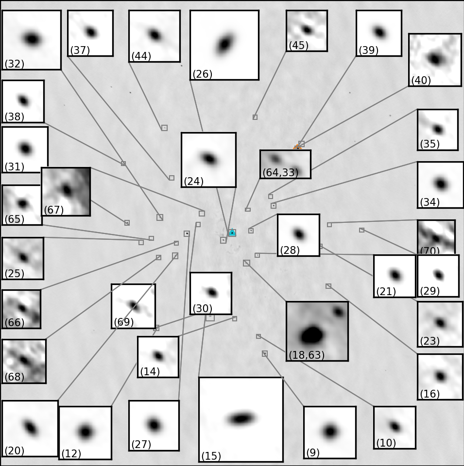
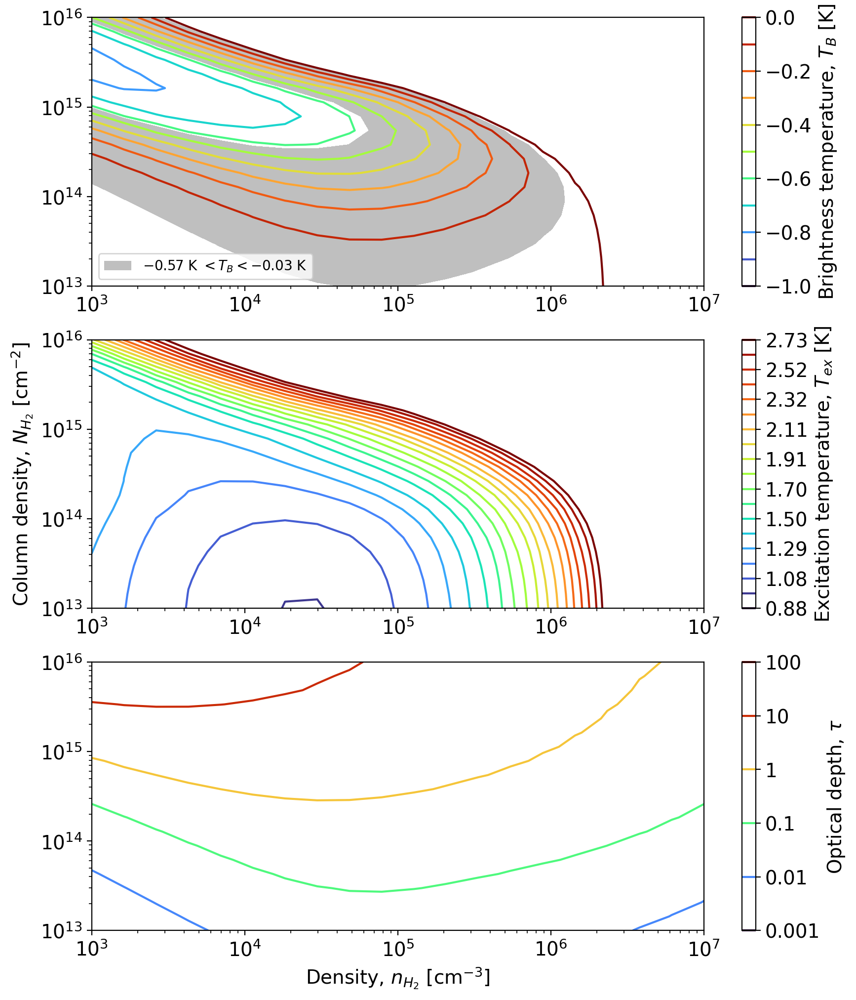
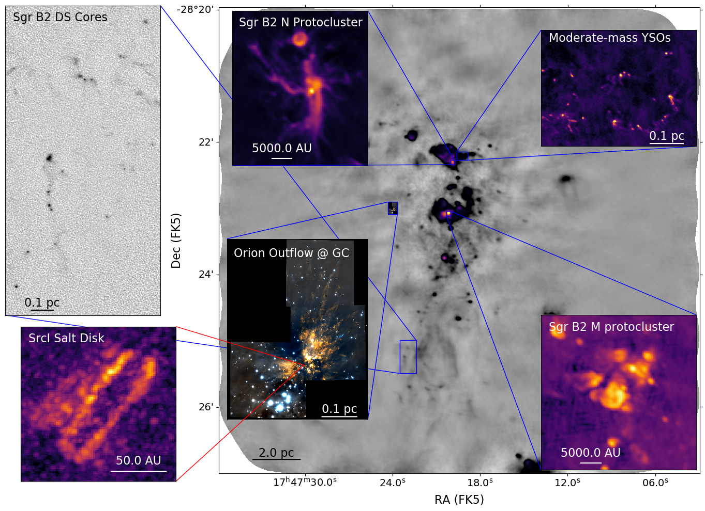
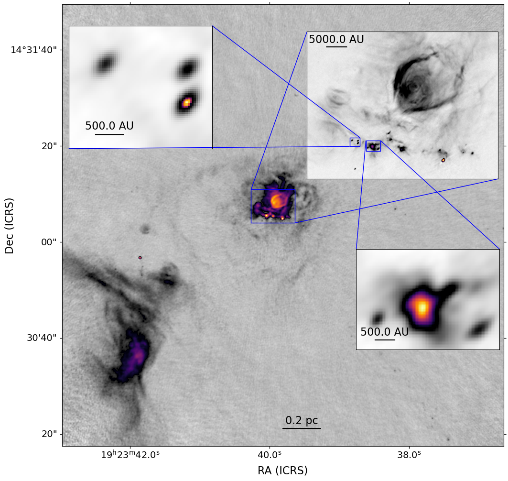
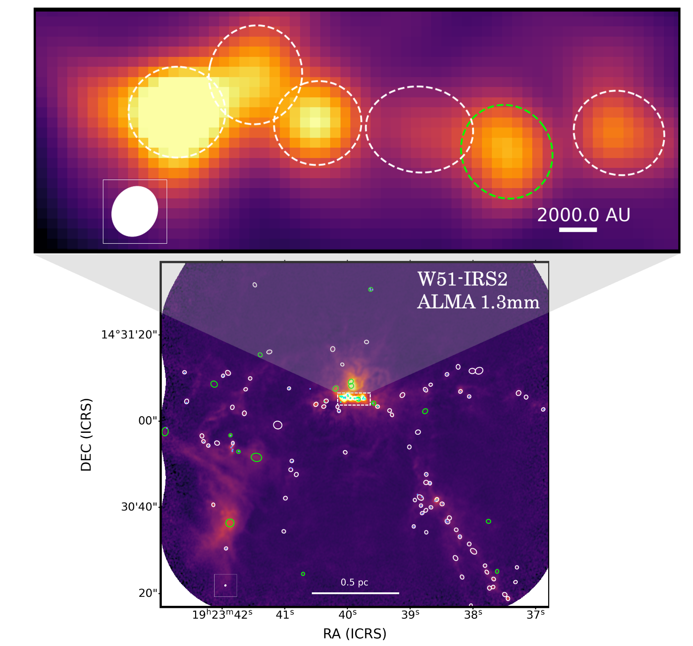
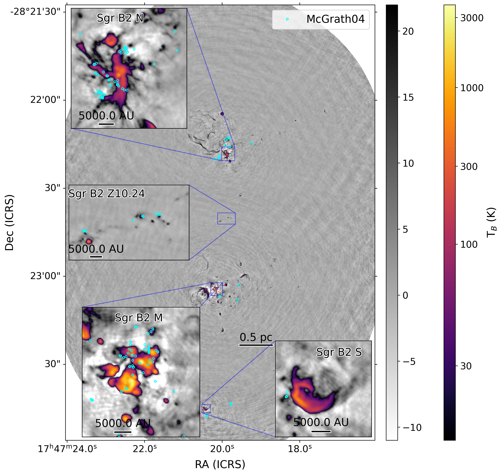
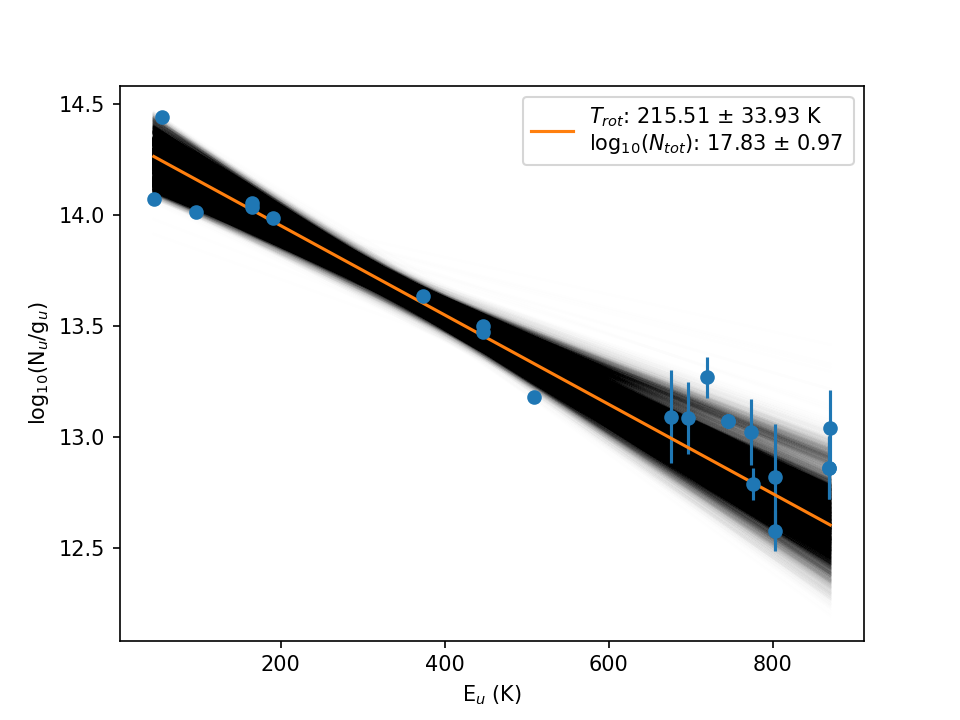

- To move slides, use the arrow keys or swipe on your mobile device
- To see the speaker notes, press "s"
- To go to full screen, press "f"
- To print as PDF, go to this URL: ?print-pdf, then print.
- To get a PDF with speaker notes, add ?print-pdf&showNotes=true to the URL.
High-Mass Star Formation and Mass Flows in the Galaxy and the MUBLO
- Postdocs: Miriam Garcia Santa Maria (2024-), Allison Towner (2020-2023)

- PhD: Desmond Jeff , Theo Richardson, Alyssa Bulatek , Nazar Budaiev , Savannah Gramze , Taehwa Yoo
- Undergrad: Derod Deal , Aden Dawson
- Supported by the NSF: 2008101, 2206511, CAREER 2142300, STSCI grants 1905, 2221, 3523
Collaborators:
John Bally, Ashley Barnes, Cara Battersby,
Roberto Galván-Madrid,
Jonathan Henshaw, J. M. Diederik
Kruijssen, Steven Longmore, Xing Lu, Fanyi Meng, Elisabeth A.C.
Mills, Juergen Ott, Justin Otter [NRAO REU], Álvaro Sánchez-Monge,
Peter Schilke, Daniel Walker, Erik Rosolowsky, Eric Koch, Ciriaco
Goddi, Brett McGuire, Dick Plambeck, Melvyn Wright,
Johan van der Walt,
Henrik Beuther, Kei Tanaka, Yichen Zhang,
the ALMA-IMF team (Timea Csengeri, Fabien Louvet,
Nichol Cunningham, Frederique Motte, Patricio Sanhueza, Thomas
Nony, Yohan Pouteau, Melisse Bonfand, Fernando Olguin, Sylvain Bontemps, and
many others), and the ACES team
Slides available at
https://keflavich.github.io/talks/colloquium_Sep2024_Columbia.html or from my webpage →talks
A visual tour of the Galaxy
Gaia star colors via ESA
A visual tour of the Galaxy
2MASS via IPAC
A visual tour of the Galaxy
Planck + HI4PI via lambda.gsfc.nasa.gov
A visual tour of the Galaxy
HI: "Diffuse" gas
HI4PI
A visual tour of the Galaxy
Dust
Planck
A visual tour of the Galaxy
CO: molecular gas
Planck
A visual tour of the Galaxy
Star formation drives the evolution of the universe
Star Formation oversimplified
Ṁ
The star formation rate, i.e., how much gas turns to stars
L / M
The light per unit mass, i.e., how stars and stellar populations turn matter into light
High-mass stars produce photons & heavy elements
low-mass stars live practically forever


Point color shows effective temperature, point size shows luminosity (left) and mass (right)
The stellar initial mass function (IMF)
Stars are sampled from this distribution
High-mass stars populate the stellar graveyard
Almost all of the light in star-forming galaxies is produced by high-mass stars
The stars form in and from gas (as traced by dust)
Most of what we know of star formation in detail comes from small local clouds
Most of what we know of star formation in detail comes from small local clouds
Cartoon of isolated low-mass star formation

A molecular cloud fragments


The core forms a central protostar
The protostar heats its parent core and forms a disk

It drives an outflow and consumes (or runs from or blows out) its core

Eventually, you end with just a star-disk system

Cartoon of isolated low-mass star formation
The isolated cartoon is wrong in several ways
Cores fragment.
Massive stars cook their neighbors in hot cores.

Most of what we know of star formation in detail comes from small local clouds
They contain only low-mass stars and do not represent star formation in general

Top-heavier IMFs are seen in high-mass clusters and in the Galactic center

Are top-heavy IMFs limited to clusters?
NGC 3603 & Westerlund 1


Most stars form in denser regions
NGC 3603 is a high-mass (104 M⊙) cluster
Lada & Lada 2003:
5-10% in bound clusters
in our Galaxy
5-10% in bound clusters
in our Galaxy
SSCs are common in starburst nuclei and drive galactic outflows
NGC 253 protoclusters (Leroy+2018)
NGC 4945 protoclusters (Emig+2020)


Star formation drives the evolution of the universe
Most stars in most galaxies formed long ago
Galaxies were smaller & denser back then
 STSCI; Pappovich, Ferguson, Faber, Labbe
STSCI; Pappovich, Ferguson, Faber, Labbe
Proto-cluster regions in our Galaxy sample conditions that were commonplace in the early universe

Big Questions in Star Formation
I'll highlight incremental progress toward answering some of these
spiced with a few intriguing discoveries
- How does the IMF vary, and what controls its variation?
- What controls the star formation rate in galaxies?
- When and how do planets form?
- How does stellar clustering affect each of these?
To answer these questions,
we observe the gas & dust where stars form
To answer these questions,
we observe the gas & dust where stars form
To answer these questions,
we observe the gas & dust where stars form: Orion
To answer these questions,
we observe the gas & dust where stars form: Orion
To answer these questions,
we observe the gas & dust where stars form: Orion
To answer these questions,
we observe the gas & dust where stars form: Orion
The Integral-Shaped filament has $\sim10^4$ M$_\odot$ of gas over $\sim$10 pc
To answer these questions,
we observe the gas & dust where stars form: Orion
The Orion Molecular Cloud is the closest (d$\sim400$ pc) site of high-mass star formation
To answer these questions,
we observe the gas & dust where stars form: Orion
BOOM!
Orion Source I
a disk around a 15 M⊙ YSO
Salt: NaCl
Temperature?
Temperature?
A contrived model
Observing the Keplerian rotation profile of a disk is the most direct way to measure a protostar's mass
(we can only see the disk, not the star itself)
Salt is a tool to weigh HMYSOs
Keplerian orbits measure mass
More Brinary disks
Ginsburg+ 2023: New sample. Miriam Garcia Santa-Maria is following up


Briny chemistry:
Salts, SiS, SiO, and PN are seen together [but limited spectral coverage]

The Orion Molecular Cloud Core is a dense cluster


 


FOV: 0.07 pc (16000 AU)
Likely the only gas-rich protocluster with a complete YSO census:
ALMA (Otter), VLA (Ballering, Wright), Chandra, JWST....
N*OMC(Otter+ 2021) = 1.6 x 105 pc-3
N*ONC(Otter+ 2021) = 0.6 x 105 pc-3
N*ONC(Hillenbrand+ 1998) = 0.2 x 105 pc-3

Most stars form in denser regions
NGC 1333, an embedded low-mass cluster
Lada & Lada 2003: >70% in embedded clusters
500 years ago, four or more stars were in a multiple system
The old picture involved source n, but it's not moving fast enough
Clusters are sites of interactions & collisions
The BN/I/x interaction is the poster case of accretion ended by dynamical interaction.

Interactions throughout formation
The outflow (& disk) around W51 North changed direction by ~50 deg
in < 100 years.
0.25-0.5 M⊙ accreted
We don't know the frequency of these events; they are likely bright transients, but most often heavily dust-obscured
The Inner Galaxy is where most stars form
The Inner Galaxy is where most stars form
ALMA-IMF: 15 high-mass star-forming regions
Orange layer shows ATLASGAL 870$\mu$m dust:the dense gas where stars form
ALMA-IMF: 15 high-mass star-forming regions
Orange layer shows ATLASGAL 870$\mu$m dust:the dense gas where stars form ALMA-IMF targets are among the most massive between 2-6 kpc from the sun
1mm Dust
[ALMA]
870 μm Dust
[APEX/ATLASGAL]
1mm Dust
[ALMA]
870 μm Dust
[APEX/ATLASGAL]
1mm Dust
[ALMA]
870 μm Dust
[APEX/ATLASGAL]
1mm Dust
[ALMA]
870 μm Dust
[APEX/ATLASGAL]
1mm Dust
[ALMA]
870 μm Dust
[APEX/ATLASGAL]
1mm Dust
[ALMA]
870 μm Dust
[APEX/ATLASGAL]
1mm Dust
[ALMA]
870 μm Dust
[APEX/ATLASGAL]
1mm Dust
[ALMA]
870 μm Dust
[APEX/ATLASGAL]
1mm Dust
[ALMA]
870 μm Dust
[APEX/ATLASGAL]
1mm Dust
[ALMA]
870 μm Dust
[APEX/ATLASGAL]
1mm Dust
[ALMA]
870 μm Dust
[APEX/ATLASGAL]
1mm Dust
[ALMA]
870 μm Dust
[APEX/ATLASGAL]
1mm Dust
[ALMA]
870 μm Dust
[APEX/ATLASGAL]
1mm Dust
[ALMA]
870 μm Dust
[APEX/ATLASGAL]
ALMA-IMF data highlights
Gas flows in N2H+ filaments (Álvarez-Gutiérrez+ 2024)


Collapse is slower on larger scales, but fast enough to matter.


ALMA-IMF: Continuum Data → core catalogs

Pouteau+ 2022 W43-MM2/3

However, a core is not a core.
≠
ALMA-IMF: CMF measurement & YSO counting
- Continuum data paper
- Survey overview (Motte+ 2022)
- Cores in W43 (Nony+ 2023)
- Shallow CMF in W43-MM2/3 (Pouteau+ 2022),
evolution (Pouteau+ 2023)
- CMF slope α ≲ 1
- 8 Hot Cores in W43 (Brouillet+ 2022) & ~60 more (Bonfand+ 2024)
- Line Data paper (Cunningham+ 2023)
- Single-dish combination (Díaz-González+ 2023)
- SiO Outflow catalog (Towner+ 2023)
- 320 SiO outflows cataloged
- Catalog paper (Louvet+ 2024)
- ~1000 cores cataloged, CMF steeper than IMF
- Gas infall kinematics (Álvarez-Gutiérrez+ 2024), Garrido+, Koley+ in prep
- Dust temperature / column maps with PPMAP (Dell Ova+ 2024)
- H41α estimates of free-free emission (Galván-Madrid+ 2024)
(these papers are all now submitted or accepted, but this is a screenshot that includes everyone's photos...)
Classic model: a "core mass function" maps to the IMF
Many alternatives, no consensus on which is best
≠
Cores change states
...but the naïve version doesn't work
ALMA-IMF "Core" Mass CDF
The CMF in protoclusters is shallower than the IMF
Louvet+ 2024
How does the CMF become the IMF?
Many cores are protostellar - so there's a mass correction
The path to better mass measurement:


 Theo Richardson
Theo Richardson
The path to better mass measurement:
Theo Richardson


Is star formation different in other environments?
Is star formation different in other environments?
Is star formation different in other environments?
Is star formation different in other environments?
Is star formation different in other environments?


Comparison of Sgr B2 (one cloud, 200 pc2) with
More massive stars,
more massive cores,
more stars in clusters
Hot Cores
Ices
Line Surveys


The Brick isn't forming many stars


The Brick is icy

The Brick is icy


Building new tools: Spectral Line Survey of The Brick



The MUBLO

Broad-Line

Broad-Line (broader than the CMZ)

Weird chemistry (no SiO?!?)

Dusty

...and cold, using SO LTE model

No NIR counterpart

No counterparts!


Hypotheses & Data
Bonus slides past here

 JWST Bonus Slides
JWST Bonus Slides
 JWST Bonus Slides
JWST Bonus Slides
 JWST Bonus Slides
JWST Bonus Slides
 JWST Bonus Slides
JWST Bonus Slides
 JWST Bonus Slides
JWST Bonus Slides


Salt backup slides
What's next for salts?
(VLA 22A-022, 23A-016)
Deep VLA observations of low-J lines in Orion

Classic HII region feedback:
The Jeans Mass MJ is the mass where gravity and thermal pressure are balanced.
MJ ∝ T3/2 ρ−1/2


Large scales again:

ALMA enables protostar counting in


The path to better mass measurement:
YSO modeling → luminosity functions
Richardson, Ginsburg, Indebetouw, Robitaille 2024 (2401.12810)
NSF 2008101:
"How are stellar masses set?"
"How are stellar masses set?"
Theo Richardson
The path to better mass measurement:
YSO modeling → luminosity functions
Theo Richardson
How does the CMF become the IMF?
Some cores fragment, some disappear
Taehwa Yoo+: fragmentation
toward W51
toward W51
What's inside the cores?
What's inside the cores?
What's inside the cores?
 
How does the CMF become the IMF?
Some cores fragment, some disappear
Taehwa Yoo+: fragmentation
toward W51
toward W51
How does the CMF become the IMF?
Some cores fragment, some disappear
Taehwa Yoo+: fragmentation
toward W51
toward W51
How does the CMF become the IMF?
Some cores fragment, some disappear
Budaiev+ 2024: fragmentation in Sgr B2
How does the CMF become the IMF?
Trend: More massive cores fragment more.
Several different scenarios: mix of mechanisms
Is star formation different in other environments?
In the Galactic Center?
Is star formation different in other environments?
In the Galactic Center?
Is star formation different in other environments?
In the Galactic Center?
Is star formation different in other environments?
In the Galactic Center?
Is star formation different in other environments?
In the Galactic Center?
The CMZ
$\sim10^8$ M$_\odot$ of gas in $\sim200$ pc, 10% of Galactic star formationThe Central Molecular Zone of the Galaxy represents one extreme of star forming conditions in the Galaxy
PPVII review: Henshaw, Barnes, Battersby, Ginsburg, Sormani, Walker
The CMZ gas is constantly replenished, as seen in "Extreme Velocity Features"

 Savannah Gramze
Savannah Gramze
How does gas flow into the Galactic Center?
We think the ring-like feature formed in this simulation is a good model for the CMZSormani+ in prep
The CMZ
www.adamgginsburg.com/ACES_tour.htmlThe CMZ:
CMZOOM (SMA survey) & early ALMA surveys started to map high-mass star formation
Battersby+ 2020
Hatchfield+ 2020
Callanan+ 2023
The CMZ: ACES
www.adamgginsburg.com/ACES_tour.htmlThe proto-Super Star Cluster Sgr B2 is forming in the CMZ
Two $>10^4$ M$_\odot$ clusters within $<3$ pc; $10^6$ M$_\odot$ of gas in $\sim10$ pcIn denser (parts of) galaxies, more stars form in clusters
Γ is the fraction of stars forming in bound clusters
Galaxy averages
The "Bound Cluster Fraction" is predicted higher in the CMZ
Γ is the fraction of stars forming in bound clusters
Galaxy averages
CMZ prediction
The "Bound Cluster Fraction" is higher in CMZs
Γ is the fraction of stars forming in bound clusters
Galaxy averages
CMZ prediction
Sgr B2 data
Sgr B2 data
The "Bound Cluster Fraction" was higher in the past
Zoom in to Sgr B2
The proto-Super Star Cluster Sgr B2 is forming in the CMZ
Two $>10^4$ M$_\odot$ clusters within $<3$ pc; $10^6$ M$_\odot$ of gas in $\sim10$ pcThe proto-Super Star Cluster Sgr B2 is forming in the CMZ
Two $>10^4$ M$_\odot$ clusters within $<3$ pc; $10^6$ M$_\odot$ of gas in $\sim10$ pcComparison of Sgr B2 (one cloud, 200 pc2) with
ALMA-IMF (15 SFRs, 53 pc2)
3mm catalog → Simplistic mass inferences
At this sensitivity, all are M>8⊙ YSOs
Mtot = 8 M⊙
∫0∞ M N(M) dM
∫8∞ M N(M) dM
∫8∞ M N(M) dM
= 96 M ⊙
The "Bound Cluster Fraction" is higher in CMZs
Γ is the fraction of stars forming in bound clusters
Galaxy averages
CMZ prediction
Sgr B2 data
Sgr B2 data
Orion → Galactic Disk → CMZ
More massive stars,
more massive cores,
more stars in clusters
Final segment:
Astrochemistry:Hot Cores
Ices
Line Surveys
Hot cores in the Galactic center: Distributed MYSOs
Desmond Jeff+ 2024
Ten hot cores in Sgr B2 DS
outside the massive clusters
Ten hot cores in Sgr B2 DS
outside the massive clusters
TG ~ 200-500 K
M ~ 200 - 2900 M⊙
(proto-O-stars / clusters)
~5% of cores are hot cores
M ~ 200 - 2900 M⊙
(proto-O-stars / clusters)
~5% of cores are hot cores
Sgr B2 DS: More massive cores than the Disk
Hot Cores
Hot cores are chemically rich sites of high-mass star formation.
They are only found in the more distant disk & CMZ regions
They are only found in the more distant disk & CMZ regions
Hot Cores
Hot cores are chemically rich sites of high-mass star formation.
They are only found in the more distant disk & CMZ regions
They are only found in the more distant disk & CMZ regions
Alyssa Bulatek: Spectral Line Survey of The Brick
- Dasar line at 107 GHz
- CH3OH only in absorption
- Occurs at density $n<10^6 \mathrm{cm}^{-3}$
Summary
Dynamical interactions are common where stars form
Most stars form in regions unlike the solar neighborhood
We have, and are building more, tools to measure masses
and they are more common in clusters. Environment matters!
Most stars form in regions unlike the solar neighborhood
- Shallower Core Mass Function in richer SF regions
- The Galactic Center forms more stars in clusters
We have, and are building more, tools to measure masses
- ALMA-IMF core catalogs with high-resolution followup & modeling
- Hot cores track the earliest stage of HMSF
- Salt is a new tool to probe disks around high-mass stars
Some notes on Data Scale
JWST Bonus Slides
JWST Bonus Slides
JWST Bonus Slides
JWST Bonus Slides
JWST Bonus Slides
Brinary disks
The SrcI disk has gas-phase salt (NaCl, KCl) and water (H2O).
So it's brine.
(blame Adam Leroy for this term)
IRAS16547A/B (Tanaka+ 2020)
have (unresolved) salt water disks
More Brinary disks
Ginsburg+ 2023: New sample
Brine lines measure dynamical mass
NaCl v=1 J=18-17
Stack of v=[0,1] Ju=[18,17]
SrcI
15 M⊙
30 M⊙
40 M⊙
What have we learned about brinaries?
- Neither common nor rare: 10 known so far, >23 HMYSO candidates examined
- Y: SrcI, G17, IRAS16547, NGC6334I, G351.77, W33A
- Ginsburg+ 2019, Tanaka+ 2020, Ginsburg+ 2022
- N: I16523, I18089, G11, G5, NGC6334IN, S255IR NIRS3, G333.23-0.06, I18162
- Ginsburg+ 2022
- Y: SrcI, G17, IRAS16547, NGC6334I, G351.77, W33A
- Coincide w/line-poor sources
- Not hot cores; little mass reservoir?
- Trace reasonably symmetric disks (in the well-resolved cases)
- there is some ambiguity b/w disk & outflow in one case
Compare: G17 vs G11
G17: Brinary
Hot (ionizing) photosphere. Circular disk.
G11: Not-Brinary
Molecule rich, kinematically messy & extended
W51 e2e: Too optically thick at 1mm to measure disk
CS v=0 J=1-0 and v=0 J=2-1 masers may trace the disk?
M = 24-10+12M⊙
if the masers trace a disk
if the masers trace a disk
CS maser conditions
van der Walt+ 2020- Top: CS J=1-0, Bottom: CS J=2-1
- Red: Consistent w/W51e2e observations
- Masers do not coexist; require different specific CS column
(N2-1=1015.6, N1-01016.1 cm-2) - Require high abundance (XCS > 10-5)
- Hot (300-500 K), moderate-density (n~105 cm-3): Disk surface? Or outflow cavity wall?
Possible future uses for these lines?
- Metallicity measurement in deeply embedded star-forming environments? (at least of Na, K, Cl)
- Disk kinematics of high-mass stars, which are otherwise unobservable (τ>1 at mm wavelengths)
- Disk kinematic measurements at early stages?
- Probe dust destruction (and/or formation?) in outflows, disks?
- Probe radiation environment around HMYSOs?
Why do we see salt?
- Previously, NaCl & KCl only in AGB* atmospheres,
associated with dust formation - Most likely dust destruction here
Dust destruction happens immediately as the outflow is launched? - What about excitation? We see vibrationally excited lines, which are not seen in AGB*s
We do not have a viable model to explain these temperatures
A strong non-blackbody radiation field from 25-40 µm may explain them.
Forsterite (MgSiO4) has some emission bands in that range. Maybe?
Deep VLA observations of low-J lines in Orion
How is star formation in high-mass clusters different?
- Feedback from one star affects many in clustered regions
- IMF depends on density, feedback, global conditions (e.g., Jones & Bate 2018, Narayanan & Dave 2012)
- Total star formation efficiency is higher.
- Collisions assemble the most massive stars?
(e.g., Fujii+ & PZ 2013, but see Moeckel & Clarke 2011)
Cartoon of high- and low-mass star formation
Main difference: massive stars affect their surroundings
Classic HII region feedback:
O-stars clear out their environment
Accreting massive young stars affect their environment
Accreting massive young stars affect their environment
Accreting massive young stars affect their environment
The characteristic fragmentation scale
The Jeans Mass MJ is the mass where gravity and thermal pressure are balanced.
MJ ∝ T3/2 ρ−1/2
The characteristic fragmentation scale is larger
Jeans Mass
MJ ∝ T3/2 ρ−1/2
Feedback affects dense gas
ALMA + VLA + GBT together give multiple temperature probes on multiple scales.
High-mass protoclusters are filled with gas warmed by feedback.
Ginsburg+ 2017, Machado+ in prep
The cartoon in the context of HMSF
These high mass cores suppress low-mass star formation (LMSF) in their vicinity.
They reduce or prevent LMSF in the cores of stellar clusters.
More extreme: 'cooperative accretion'
With enough high-mass stars forming concurrently, massive stars may prevent fragmentation entirely.
If they still have enough gravity to bind the gas, the remaining gas is forced onto the most massive gravitational sinks.
If they still have enough gravity to bind the gas, the remaining gas is forced onto the most massive gravitational sinks.
Large scales again:
What governs the star formation rate?
Turbulent ISM models
Turbulent ISM models
Turbulent ISM models
Measuring Line Profiles
SCOUSE uses pyspeckit for manual fits. Gausspy+ is machine-learning trained. We're exploring more automated approaches. ALMA enables protostar counting in
distant, massive clouds
Sgr B2: the most massive & star-forming cloud in the Galaxy
How do we learn about clustering? The IMF?
- Count objects:
- Cores are (sometimes) countable
- Protostars are countable
YSO counts let us investigate thresholds
Local cloud studies support the idea of a gas density threshold for star formation
Thresholds are used in simulations to say
"if gas reaches this density, turn it into stars"
"if gas reaches this density, turn it into stars"
Compare YSO counts in Sgr B2 and the CMC
Is there a threshold?
Is there a threshold?
A threshold separates Sgr B2 from The Brick
Walker+ 2021
3mm Luminosity Function
What are the sources?
At this sensitivity, all are M>8⊙ YSOs
Mass measurements: Optically thin, isothermal dust
TD estimated with PPMAP fits to Herschel data
(~6" resolution)
Simple models assuming TD ~ f(M) don't change CMF much
We can do better with YSO models and TG measurements
From YSO counts to the IMF?
How do we measure the CMF if the cores all have YSOs in them?
Mapping accretion histories
(left: IS, right: TC)
onto the Robitaille 2017 model grid
Key addition:
Envelope mass!
(left: IS, right: TC)
onto the Robitaille 2017 model grid
Key addition:
Envelope mass!
SPICY-ALMA-IMF:
ALMA-IMF:

ALMA-IMF:

 Allison Towner
Allison Towner




Nazar has cataloged 100s of new masers in Sgr B2 (VLA 18A-229)
A quick look at what's coming: Nazar has cataloged 100s of new masers in Sgr B2 (VLA 18A-229)

VLA 19A-154
Richardson-enhanced Robitaille+ 2017 model grid
fits including ALMA data
UG team:
Sydney Petz
Brice Tingle
Morgan Himes

Brice Tingle
Morgan Himes

{kind=link}
{kind=link}
Our Galaxy's center, the CMZ, has denser gas than the Galactic average
Cold Dust
Hot, ionized gas
Hot dust/PAHs
Hot, ionized gas
Hot dust/PAHs
ALMA-IMF:
The CMF is shallow (top-heavy) in HMSFRs
ALMA-IMF:
The CMF is shallow, and steepens with time?
Louvet+, subm
ALMA-IMF Line Data: 320 cataloged SiO Outflows
Allison Towner
Resolved, structured SiO outflows
5-60% of SiO at low-velocities:
Relic outflows?
Relic outflows?
ALMA-IMF Line Data: CH3CN, CH3CCH
Temperature measurements with per-pixel rotation diagrams

Jeff+ in prep (CH3OH in CMZ), Wyrowski+ in prep (CH3CN in ALMA-IMF)
Hot cores in ALMA-IMF: From rare objects to a population
Cores with line forests
TD>50 K
TG ≳100K
TD>50 K
TG ≳100K
Hot core overview:
- 9 HCs in W43-MM1 (Brouillet+ 2022)
- ~60-70 HCs in ALMA-IMF sample from CH3OCHO (Bonfand+ 2024; left)
- ~10% of continuum cores are within hot cores
- CH3CN temperature maps (Wyrowski+ in prep)
ALMA-IMF Key Results summary
- Rich, science-ready data (Ginsburg+ 2022, Cunningham+ 2023)
- CMF is top-heavy in HMSFRs (Pouteau+ 2022, Louvet+ 2024)
- Core fragmentation is not 1-to-1 [WIP] (Budaiev+ (CMZ), Yoo+ (W51), Louvet+ (W43), ...)
- 10% of $M\gtrsim1\mathrm{~M}_\odot$ cores are hot cores (Brouillet+ 2022, Bonfand+ 2024, Wyrowski+)
- Outflow feedback builds over time, sets initial conditions for many cores (Nony+ 2022, Towner+ 2023)
What's next?
Nazar has cataloged 100s of new masers in Sgr B2 (VLA 18A-229)
Ammonia Masers:
Derod Deal
VLA 19A-154